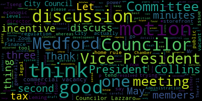
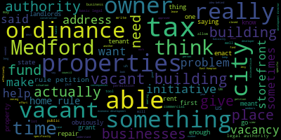
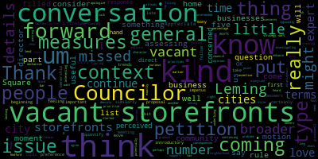

[Bears]: City Council, Administration and Finance Committee, May 21, 2024. Mr. Clerk, please call the roll.
[Lungo-Koehn]: Vice President Collins. Councilor Lazzaro. Present. Councilor Leming.
[Leming]: Present.
[Lungo-Koehn]: Councilor Tseng. Present. President Bears. Present. I also see Councilor Scarpelli here.
[Bears]: For present one absent meetings called to order. There'll be a meeting in the Medford City Council Administration Finance Committee, May 21st, 2024 at 6 p.m. in the Medford City Council Chamber, second floor, Medford City Hall 85, George P. Hassett Drive, Medford M.A. and by Zoom. Purpose of this meeting is to discuss paper 24-025 offered by Councilor Leming regarding commercial vacancy tax. The full description is whereas the City of Medford has many commercial storefronts that are either vacant or for that are either vacant for unacceptably long periods of time, or are rarely and inconsistently open for business. And whereas there exists insufficient incentive for owners of such property to maintain and rent storefronts to active businesses. Now, therefore, be it resolved that the Medford City Council discuss the adoption of a commercial vacancy tax that can be applied to disincentivize these storefront properties from remaining unoccupied indefinitely. Be it further resolved that this matter be referred to committee for further discussion with the chief assessor, finance director, and economic development director.
[Leming]: Yes, thank you. So this here is a draft of a home rule petition which would allow us the authority to, which would allow the city of Medford the authority to actually impose the commercial vacancy tax on landlords that own vacant commercial storefront properties. businesses or businesses that are effectively closed all the time. When I was going door-to-door campaigning, I ran into people who talked about the fact that in West Medford and South Medford, there are a lot of businesses that don't, that are just a lot of buildings that are owned by landlords who just never rent them out to businesses. There was one woman who was trying to get in contact with the owner of the dry cleaner that was closed at the time in West Medford for about a year and a half. She said that this person wouldn't even pick up the phone to talk to her. She wanted to open up a gym there, but that's obviously difficult to do if you can't even talk to the person who owns the building. So there's, I did research on this. There's not a whole lot of default authorities that cities have to leverage this sort of attacks. So what I've been doing is two different things. The first is the home rule petition draft that is in this agenda packet. And this would just give us the very basic legal authority to be able to enact attacks such that it would B, it would effectively disincentivize property owners from doing this. And there are a few specifics in here. First off, it says that the proceeds from the tax will be put into a special fund that will help to aid in the repair upkeep of these properties, as well as funding local mechanisms to incurrent tenant occupancies, such as advertising for these properties and so on and so forth. Sometimes, and this gets into the fact that sometimes these properties are vacant for reasons that are outside of the property owner's control. Maybe the building is not in good enough shape to attract a tenant at all, so they would need extra funds to repair the building. and such. There's also another clause in here that specifically would enable landlords who own the property to terminate the tenancy of any business that currently has a lease with them but it's just not doing anything with that and this was because a specific scenario is brought to my attention where the tax would be the tax in this place would be placed on the owner of the property but sometimes they may have a lease in which the person who they may have a lease with a business owner who it's really in their authority to make sure that they're actually running a business day-to-day in that case. What I've also been doing, so this here is just meant to ask the state to give Medford permission to be able to enact this vacancy tax. This obviously isn't the entire ordinance, so we just give the basic legal authority to do so. If and when the state does give permission to Medford to enact such a tax, there would obviously be other rules that are put in place. For instance, a tax wouldn't be applied immediately after vacancy starts, there would be a grace period, there would just be other that are put in place to make sure that these scenarios I've heard about where, you know, you're not just unfairly penalizing people who may be in a situation where tenants are just not, where tenants are just not trying to rent out good businesses and their properties and so on. But this, again, this is just about giving the city the basic legal authority to do that simultaneously. And this is, Um. Relate this is related to this initiative, but I figured it would be it would best go into zoning. Um I've also put in work around a vacant building ordinance, which is something that the city currently does have the authority to do. Um there's it's similar. They have had similar initiatives over in East Hampton and some other The city doesn't have the authority to levy a tax for profit, but we do have the authority to levy a fee in order to make something cost neutral. So the vacant building ordinance that East Hampton implemented basically would charge the owners of vacant buildings, something like $1,000 a year to as long as long as the buildings are buildings are vacant to maintain a public vacant building database which would be maintained by staff members and so. You'd only be allowed to charge enough for that to pay for the staff cost of maintaining that. So, again, that is one initiative that we're looking into, and that would likely create the foundation to enact commercial vacancy tax. in Medford, if and when this particular petition is approved, if this council does end up passing it. But overall, this is my effort to address a problem that I heard about from residents time and time again, which is they don't like to see so many closed down storefronts in Medford. They think that the issue is sometimes, not in all cases, but sometimes landlords that just for whatever reason either don't want to or don't have the funds to be able to rent out their storefronts that they own to businesses and so this is an effort to help give them to help build up the funds to either help advertise for tenants or repair their properties as it may be. So the only change I would I personally suggest the text the clerk pointed out that typically homeworld petitions don't have the word resolved. They have the word enacted there so I would motion to change that. After we hear comment from both the economic development director who I can. see us on Zoom, as well as any members of the public who are interested in seeing this. I would personally like to refer it to the regular council meeting, but I also look forward to hearing what my colleagues have to say about it as well. So, thank you.
[Bears]: Thank you. We have the economic development director who was invited, so I'm happy to go to him first. We have Sal DiStefano. Sal, I see you're in your car. It's a good time to chat. We can't hear you. I just asked you to unmute. You're going to have to click a button.
[Di Stefano]: Got it. Sorry about that. I just had to pick up my son from soccer tryout. So I'm glad to join everybody. Thank you, Mr. President, members of the council. I wanted to inform uh everybody that we just recently submitted an application for the vacant storefront program um that's offered through the commonwealth of massachusetts on june 20th our application uh will be in front of the economic advisory coordinating council of the commonwealth And we're really excited about this program because basically it will provide matching grants to businesses that will move into vacant storefronts in Medford. So I launched this program in Gloucester two years ago. And the reason why I like this program is the money actually goes to the business owner that is going to occupy the storefront. And the matching funds from the city will be from our community development block grant. And what the state offers are up to $20,000 in refundable tax credits. And why that's important is lots of times new businesses don't make a lot of profit their first year. So refundable tax credits work in such a way where whatever you don't owe to the state at the end of the year comes back to you in the form of a check. So it could mean up to, $20,000 for two businesses a year to start out with. And it's a nice incentive for the businesses to help them get started. In addition to that, we hope to get our facade improvement program refunded. So there could be a lot of resources offered to a small business and You know, personally, while I definitely agree with Councilor Leming about the issue and challenges with vacancies, I just, in my professional opinion, I think, you know, like all things we do when we're talking about policy, is we have to be careful of unintended consequences. And those unintended consequences could be, you know, landlords taking the first person that comes along, that might not be a business that we want in Medford, just to fill a storefront. Or punishing a small, like a Ma and Pa landlord that has an issue with filling a vacancy because they can't afford to fix up the storefront, whatever it is. I just want all of us to keep that in mind because we definitely want back for our city. The mayor and I will present on June 20th to the EACC. We hope to get their approval.
[Bears]: So we just lost you for about 30 seconds.
[Di Stefano]: Okay, let me, I'm pulling over. Can you hear me now?
[Bears]: We can, it sounds good now.
[Di Stefano]: Okay, sorry about that. So, you know, in summary, we're looking forward to this grant program to be approved by the state. And I really think, you know, whatever policy we come forward with, we just need to keep in mind the unintended consequences that could occur, such as, you know, landlords taking, you know, the first business that comes along and it might not be something that we want. uh... in the city and then also i'm fortunate let me uh... as i was told uh... it as soon as i started here in medford that unfortunately there is this this narrative that's out there on where medford is a is a difficult place to to do business uh... which we're all working together to to try to uh... prove are wrong and just overall my concern is when things come forward that appear to be not friendly to businesses or could potentially negatively impact a business or a property owner, it just, you know, it makes it harder for us to kind of change that narrative for the city. But with that being said, happy to work with all of you in trying to fill these vacancies. Jess Martinez in my office has been taking pictures of vacancies. They're on our list and we're happy to work with landlords and refer potential businesses to them. So looking forward to positive progress and I thank you for your time.
[Bears]: Thank you, Mr. DeStefano. Any further questions or comments by members of the council? Councilor Tseng.
[Tseng]: I'll yield to Councilor Leming first, but I do have some questions.
[Bears]: Councilor Leming, then Councilor Tseng.
[Leming]: So I do respect the sentiment that things like this can have unintended consequences. Again, like I said, the Home Rule petition itself would only give the city the very basic legal authority to be able to rent, to be able to enact this tax to begin with. It says nothing about timelines post vacancy to uh after which the tax would apply um so the idea behind this would be if the state does grant us the authority to do this it would be just one uh it it would Hopefully the ordinance would be able to be crafted so that it makes it so that these negative consequences would be very practically disincentivized in the actual implementation. Some other concerns that I did have though is that I went to a meeting very recently where a developer just outright told me that keeping some of the properties that he owned vacant was actually profitable for him because it would make a tax, it would make, he could just write off, write it off as a loss in his taxes. So sometimes it is beneficial to landlords, it is in their best interest to keep these properties vacant and that is really that is really one factor that this is meant to disincentivize. I do look forward to seeing how that grant application goes. Obviously there is no one tool that the city has that will be able to fix the problem that we've been experiencing for a long time, which is vacant storefronts, but a combination of carrots and sticks are needed to be able to address this problem. And like I also said, the idea behind this is that the funds would go, is that the revenue from this tax would go into a fund specifically meant to help out those vacant storefronts when they do, if they are in a state in which they can't be rented out. Again, like, like, 11 thing that some members of the Chamber of Commerce told me about that dry cleaner over in West Medford is that there's very significant repairs that need to be made to it to be before it can be rented out on the tune of. I think 70, don't hold me to it, but I think it said something like $70,000 worth of repairs at the time needed to be made. And I don't know where that money would come from. So the idea behind this is to be able to collect some fund, which is specifically meant to address those issues. But I do respect the views and the efforts of our economic development director, but it is my belief that multiple tools and initiatives are needed to help to address this problem.
[Tseng]: Thank you. I think in general, I'm open to this idea. I have questions about it, and I think a lot of it is, a lot of my support will hinge on the details of the proposal. I think my first question is to Councilor Fleming. Am I understanding it correctly that doing this process is a necessary first step for us to have a conversation about the details of what a vacancy tax would look like. So in terms of like, we need to do this first before we can meet as a council to talk about what percentage or what, you know, what the fee is and what the exemptions are.
[Leming]: Absolutely. So, often homeworld petitions are written in very simple, short, plain language. Essentially, this would just give the city permission in the 1st place to be able to then implement an ordinance. So my view, my view on this is. we will go to the state, ask them for permission to be able to just have the right to do this in the first place. This text obviously is not detailed enough to act as an ordinance or a set of rules in itself, but it would grant the legal authority to then be able to implement that. As I said, there are initiatives in other cities right now. They've basically been doing the same thing. In East Hampton, they've implemented a vacant building ordinance, which effectively lets them tax owners of vacant buildings at certain very small rates just to maintain a database. Again, my concern with that is that that's not really enough to justify to justify a tax write-off. So I think what would happen if we did that is that it would incentivize some owners of these properties to, if we just had a vacant building ordinance, it would incentivize some owners of these properties to rent out, but other owners, it would just, you know, it would basically just be another number on a spreadsheet that they could account for. So this essentially would allow us to levy a tax that would be enough to disincentivize them from doing that.
[Tseng]: I think it's, if I can, in summary, I think it's, it is helpful to know that, you know, even if I don't necessarily agree with all of the details of a proposed tax in the future, even if we disagree on the viewpoint, a vote tonight is just to give us tools in the toolbox to consider. I do have some of the same worries that the economic development director has about this proposal. I do actually have, you know, questions that are more detailed about those. And I think if I can, I'll direct them through the chair to the economic development director. I also agree with Councilor Levin that we need to be exploring both sticks and carrots in this situation, expanding the tools that we have. I hear, I am, you know, the idea that we, the landlord might seek the first person to fill that sore front is a concern I have in my mind. I'm curious if that's something we can mitigate through the zoning process. So making sure that we are not allowing for certain uses that we don't want in our business districts. Is the economic development director able to speak to that?
[Di Stefano]: Yes, great, thank you. So the answer is, it depends, right there, you know, it depends on the location in if the particular use is. you know, um, is as of right, um, or requires a special permit. Um, I, I think that, and I think some business uses might be subjective. Um, you know, personally, I, I, um, You know, if something is a check cashing place, not something that looks good for a district. I'll probably get hate email after this meeting on it. But, you know, other types of uses. You know, they could be allowed, but just not desirable. Or it could be, you know, a prospective tenant that isn't really financially sound that they might just take. With that being said, I think going back to the vacant storefront district program, now that we have a list of those vacancies, I would like to follow up with the landlords and basically when possible get some feedback as to why it's vacant and maybe if there's something where let's say that the space is uninhabitable because of the cost of like you had talked about the example of the dry cleaner you know if if something is kind of an insurmountable reason that that may be we work with them and say okay you know let let's try to figure out a solution here and you know versus somebody who's a bad actor right like maybe there's a way to differentiate the two but definitely happy to work with council uh on this and um uh everybody's been very helpful to me ever since i got here so i definitely think we can We can be in touch with each other as this process goes on. Hopefully the grant program will be approved and we can work together to help resolve the situation.
[Tseng]: Thank you, Director. Councilor Sainte. I think the director's comments lead me to the next question is, you know, even if we have worries about unintended consequences with this, with the proposed new system, I think it's clear that one of the unintended consequences of the current system is, is landlords keeping their properties vacant, storefronts vacant. for tax write-off purposes, and I think we would all agree that that's an unintended consequence. And so I do see this as a potential way to address that by changing costs and addressing negative externalities. I'm curious what the director would have to say to other policy tools that we might use to address that problem of landlords keeping their storefronts vacant for tax write-off purposes.
[Di Stefano]: Um, I think, uh, Councilor that, so I'm going to say that this is the first time I've heard that there's tax advantages to property owners for keeping it vacant. My understanding that as somebody who owns, um, property myself that I rent out, um, that it just, you don't make you report less income at the end of the year. That is not a write off. I could be wrong. I'm not a CPA. Um, But with that being said, I think sometimes also the free market could solve the issue by new owners coming in and investing in the property and getting them tenanted. But I think a lot of it has to do with outreach and relationships and just do whatever we can to direct new businesses to vacant storefronts and, you know, trying to get those filled. And if there are bad actors out there, which every city has them, you know, then we, you know, maybe a measure like this could help resolve the situation.
[Bears]: Thank you. Councilor Lazzaro.
[Lazzaro]: I was going to say something similar to what the director just said, which is that if there is a tax benefit to keeping storefronts vacant, I think that we should verify that with a tax professional before moving forward. If that means before moving forward with writing the basic first step home rule petition. I'm not sure if we need to do that before then or after when we're deciding if we want to pass this and then decide later as we're writing it. I'm not sure that exists either. Correct me if I'm wrong, but One, the second thing is, I wonder if some portion of this is sort of a, you can't squeeze blood from a stone situation, and that some of the storefronts might be vacant because of what was mentioned earlier, that there's some insurmountable amount of, you know, the building's not up to code and they can't afford to bring it up to code. and therefore it can't be rented out because the owners of the property are unable to reach enforcement levels of, you know, eliminate the violations. So I'm not sure how, I'm not sure we as a council are at the level of understanding. I don't feel myself that I'm at the level of understanding of the nuances of the situation yet, but also that being said, I could be convinced that this process, all that we need to do is have a basic understanding of the problem and that we are looking for approval from the state to begin greater understanding. Though I would personally feel more comfortable if we had more details and more data to back up how this would benefit us in filling this reference, particularly in my neighborhood in West Bedford Square that has a bunch of empty storefronts right now, which is unappealing. So I do understand the need for this. I agree that there is a need for it. And I'm not sure that I can point to, like, add a spreadsheet or presentation that would make me see more clearly that this is the solution that's going to get us there. I would feel more comfortable.
[Bears]: Thank you. Councilor Collins, Vice President Collins, Councilor Leming.
[Collins]: Thank you. Councilor Leming had his hand up first, if that was a direct response.
[Bears]: Yeah, but he's talked a lot. I'm owning you.
[Collins]: OK. Thank you. Appreciate this introductory conversation on this topic. I'm sorry. I arrived a little late. I was coming from a work meeting, so there might have been some details that I missed at the beginning.
[Bears]: It's a bad sound system. Let's be careful. Let's be careful we don't get misheard.
[Collins]: I think I'm feeling similarly to some of my fellow Councilors and that I have a number of questions on kind of where this proposal is coming from that I would like to get some answers to before we move forward. I think that's certainly the impetus for having this kind of broader conversation about what to do about vacant storefronts is really important. And my preference would be to continue this conversation kind of in a broader context of what in general are we doing about vacant storefronts. I think for me. I would like to take the time for myself to have a little bit more context of how do we quantify how many vacant storefronts are in the city? What type are they? Where are they? Is there any trends in terms of ownership or type or neighborhood? Is this a thing that cities typically mention by number or by density or percentage? How long do they tend to be vacant for? I think I'd like to enhance my understanding about what exactly the problem is. And I also would love to get an expert opinion or an expert analysis of the tax incentive that we've heard of that there is to remain vacant. I would love to get some more details about that. I think where I'm landing is that, you know, we know that vacant storefronts are an issue in the community because when we have them, people talk about it and people don't like seeing vacant storefronts where there ought to be interesting or useful businesses. But I agree that there are some, I have some concerns about the unintended consequences because another thing that we hear about is when people come to Councilors and they say, why is it that we have five X style businesses in Medford Square and no, there isn't a third bar or something like that. And we have to say, well, it's not up to us. But I think that the issue of why don't our squares have the character that we might want for them is a question that we should consider alongside this. In terms of what we're kind of doing here in general with the issue of vacant storefronts, I would really like to have a conversation about what, I'd like to continue the conversation that the director started about what really helps when it comes to the business community with filling vacant storefronts, figuring out what business owners need, and kind of assessing where is this mechanism kind of our list of most useful tactics and priorities? And also assessing, you know, when's the right moment for something like this? Um, is this on our list of top five things to do to get storefronts filled? Um, or should we be investigating, you know, kind of, or should we be fast tracking, um, you know, some other measures, um, you know, and continuing to prioritize the conversation of how do we as a council support getting storefronts filled, um, but perhaps spend some more time with this home rule petition and put this forward as part of a more, uh, coordinated strategy. I'm also curious to know, and I apologize, Councilor Leming, if you spoke to this earlier, if there's any sort of groundswell of cities passing this type of home rule petition, if we're kind of in that moment of motion on it, or if this is more of a gradual coming together. because I think in general, I think the director's point is well taken that we have to consider not just what this would potentially do, but how it will be perceived. And I do think it would be advantageous for us to put this forward in the context of more measures or at least underlying measures that the city is already doing, because I am concerned about it. I'm concerned about how it will be perceived if we put it forward in kind of a conversational vacuum. Thank you.
[Leming]: So, to address a couple of the points first off the city does not have a good handle on the number of vacant storefronts I talked to the building commissioner he had a part part of this just has to do with capacity and this was our conversations about the vacant bill about the vacant building ordinance that I also passed to zoning. They had a spreadsheet that had been last updated, I think, in 2015, but I don't think that they actually had the capacity to be able to figure it out and therefore get a handle on the problem. Another pattern in this in this conversation is, so I understand that there are unintended consequences, but there are things that I think would be more appropriate to solve using other means, like as Councilor Tseng was saying, I think it is more appropriate to worry about, to handle the idea of store of businesses that we don't want being in places we don't want with zoning rather than something like this. This really is meant to address the, the small number of bad apples in the city. The tax incentive comment actually came from a developer that I was in a meeting with where the conversation was something like, I was talking about this initiative more at a high level way. I said, listen, there's a lot of vacant properties. I'm developing a commercial vacancy tax initiative around that. And the response from the developer was something like, Oh, well, I actually want to keep a few of my properties vacant because then I could just write that off as a loss on my taxes. And it's more beneficial for me. You don't really understand how this works. And it was sort of phrase like that. So that was and saying that saying something like that to a public official where It's not in the public interest at all to have someone that owns these properties deliberately try to keep them empty. So I think that we could definitely look into the specific tax rules that enable this to happen. But in regards to all the details of implementation and so on that we've been talking about, again, Home Rule petition step of this, if it is approved, would just allow the city to have the basic tools it needs. to be able to craft an ordinance like this in the first place. So when we're at the, as Councilor Lazzaro was saying, we do not need to have every single detail of this figured out at this stage. Hypothetically, I'm not saying we should do this, we could we could we could even submit a home rule petition it gets approved we find out it's really not what the city needs maybe the uh grant that the economic development director uh submitting goes through and you know we find out that that really does address the problem and then down the line we find out we don't need it but at the same time we could also run into a situation where the grant doesn't go through or it just doesn't work and we actually do really need this tool in the toolbox if we're going to do something about that. And in that case, it really would be useful to have a home rule petition submitted sooner rather than later so that several years from now we could potentially have something like this in our toolbox. So, you know, I don't want with something like this, I do understand that there is, as Council Vice President Collins was hinting at, there is a There definitely is an optic situation where submitting something like this can send a message to business owners and property owners through the city. But I also, at the same time, I don't want to get into analysis paralysis when this is really just the step 1 in the process.
[Bears]: I think you said it best when you said we don't have to have all the details at this time. And I think we actually don't behoove ourselves to discuss the details of the ordinance that we would potentially be able to pass before we have the power to do it. And I think we get caught up in those discussions and it actually confuses the process. I was going to say that like 20 minutes ago, but I kind of already let it go. So I decided to let it go more, which maybe wasn't the best choice. But in any case, I just want to say three things. Number one, one of the issues here is local control. I generally think that it's better for the city of Benford to have more authority than less authority and to have an additional tool in the toolbox. So in that sense, I think there's validity here. My second piece is on legal review. In addition to the other potential motions discussed, I believe by Vice President Collins, there'll be a motion to keep it in committee and have further discussion generally on the commercial vacancy issue. I'd also like to see the text of the draft Home Rule petition reviewed by legal counsel. My third issue is just generally what we're trying to solve for here. I think we all know that, you know, good economics shows that good, fair, and free markets are markets with good regulation. One of the things we're trying to correct for here is regulations outside of our control. There are tax incentives at the federal level that have perverse incentives and create perverse incentives. There are externalities that the regulatory system doesn't account for. And as someone, I think Sal noted, a lot of this is about relationships and network theory tends to throw microeconomics 101, as Friedman would say, into disarray very quickly because you have relationships and actually the personal making a big impact here. Or you may have an individual who has a certain portfolio where it makes sense to keep something vacant, where you may have an individual with a portfolio where it doesn't. And that's where the idea, the very clean but very unrealistic idea of the uniform rational actor tends to fall apart. So just putting that out there, I do agree that obviously the regulations at the multiple levels of government that impact commercial vacancy clearly are out of whack. I tend to agree that having more tools at the municipal level to try to align them is a good thing. And this might well be one, but I think we have to have more discussion about that. So I would request, in addition to the motion I think Vice President Collins was intending to propose, that we also refer this to draft home rule petition to legal counsel. But just as one person in general, my opinion is that getting more home rule power from the state is a good thing. And this could be a good tool in the scope of trying to address this problem. So with that, is there a motion on the floor? Vice President Collins.
[Collins]: I would motion to keep the paper in committee and to submit the draft of the formal petition for legal review. And I think I missed a part of that. So somebody jump in if I'm forgetting.
[Bears]: On that motion, is there any discussion by members of the public? We have a second from Councilor Lazzaro. Any discussion by members of the public? Mr. Fiore, name and address for the record, please. You have three minutes. We're running up on the clock. Yes.
[Lungo-Koehn]: Sorry, you can start the three minutes again. My apologies.
[Bears]: Do I have three minutes? You have three minutes starting now, yeah, sorry.
[Fiore]: Okay, so you have simply stated a what. Metford has some vacant commercial properties. However, you haven't determined the why. Why does Metford have some vacant commercial properties? How could you possibly hope to solve something if you don't know the why something is happening? Let me restate the situation now in engineering terms. You have simply stated a condition, situation, or problem. Metford has some vacant commercial properties. However, you haven't provided the diagnosis of vacant commercial properties. In other words, you haven't investigated or analyzed the cause or nature of vacant commercial properties. How could you possibly hope to solve the problem if you don't know the cause of the problem? Let me yet again restate the situation, but now in medical terms. You have simply stated a sign or symptom. Medford has some vacant commercial properties. However, you haven't provided a diagnosis of vacant commercial properties. In other words, you haven't identified the disease leading to vacant commercial properties. How could you possibly hope to get rid of the signs and symptoms if you don't know the disease? You cure the disease, not the signs and symptoms. So I didn't have enough time to look at this, but I did some research, which I haven't heard anything in terms of research in this meeting. So this is out of Erika Moskowski, Carver HBS, and Daniel Stackman at NYU Stern. Can retail vacancy taxes reduce urban storefront vacancies? And I just would like to point out that So the case for vacancy tax, persistently high vacancy can have significant, I'm quoting, this is a presentation that I just mentioned. Persistently high vacancy can have significant externalities affecting surviving tenants, residents, et cetera. So a vacancy tax could act as a Pigouvian tax, which would force lenders to internalize the externalities vacancy imposes. However, I didn't mention any of the problems with this. So these are the cases that this study mentions against a vacancy tax. A vacancy is primarily caused by search frictions, so meaning it's hard for landlords or tenants to match each other. Tenancy covenants, which I don't know where I have done, or severe lack of demand in a vacancy tax is both ineffective and punitive. The tax is likely to be especially harmful in areas with low demand for retail space. Landlords provide a socially useful screening service which the tax may distort. Landlords only want to sign tenants who are going to be successful, for example, generate sales. If a landlord doesn't think a tenant will generate enough sales to pay rent, then it's unlikely that the tenant will benefit the neighborhood. A tax may cause landlords to accept worse tenants than they would in the absence of a tax. So there's an updated Study to this by the same author. So this is Erika Moskovsky and Daniel Stackman. It's a working paper out of the Harvard Joint Center for Housing Studies in 2023. Why do urban storefronts stay empty for so long? And it basically- Yes, you have about 30 seconds. Yes, it basically mentions that we also find that while a vacancy tax similar to the one proposed in New York State would decrease the vacancy rate and rents, it would also lower tenant quality and lead to faster churn in the city storefronts. So I would, in the future, I would like to see research on an issue and state the why so we can actually address the problem rather than just blanketly say like, oh, okay, we observe empty storefronts, we're gonna tax We're going to propose a tax and solve the problem through taxation.
[Bears]: Just to clarify, we are proposing having the power to discuss implementing a tax.
[Fiore]: Yeah, I understand. But I would, again, I would much rather if we discuss why this is happening and all sorts of specific ways to address the problem, rather than just having decided we're going to solve it through taxation.
[Bears]: Great. And I think that is the intent of Vice President Collins' motion. Any further discussion by members of the public? Seeing none on Zoom and none in the chamber, on the motion by Vice President Collins, seconded by Councilor Lazzaro. All those in favor? Opposed? Motion passes. Any further motions? On the motion adjourned by Councilor Tseng, seconded by Councilor Lazzaro. All those in favor? Opposed? For those on Zoom, we are moving to our Committee of the Whole meeting on the school budget, so you'll have to rejoin the next link. Meeting is adjourned.
|
total time: 5.67 minutes total words: 1020  |
total time: 0.2 minutes total words: 30 |
total time: 16.55 minutes total words: 2404  |
total time: 2.84 minutes total words: 450 |
|
total time: 2.47 minutes total words: 363 |
total time: 4.22 minutes total words: 758  |
||
{kind=link}
{kind=link}
{kind=link}
{kind=link}
{kind=link}
{kind=link}